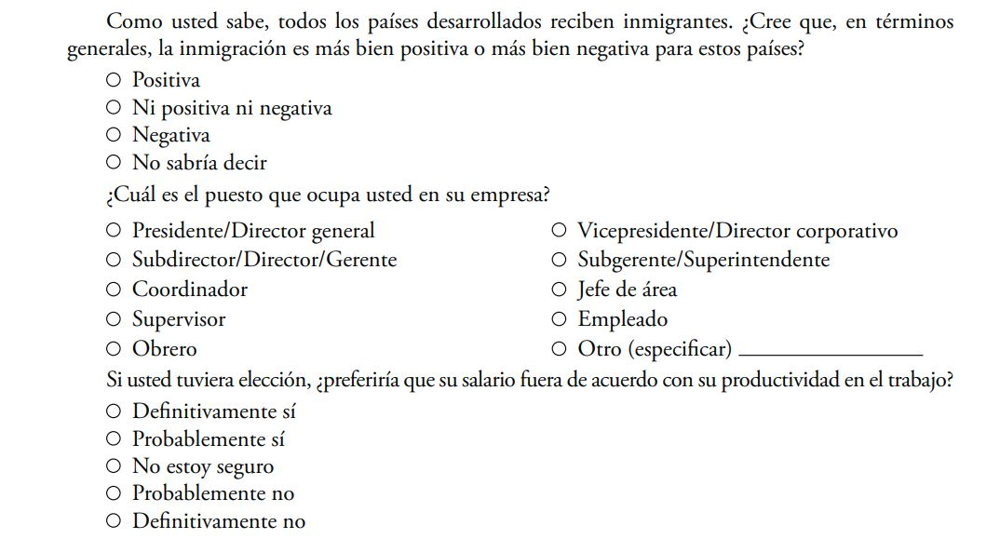
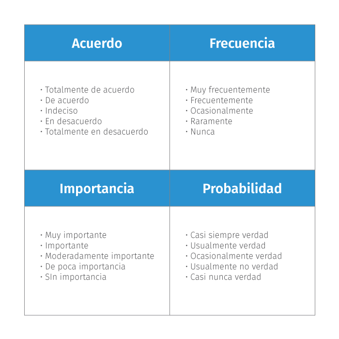
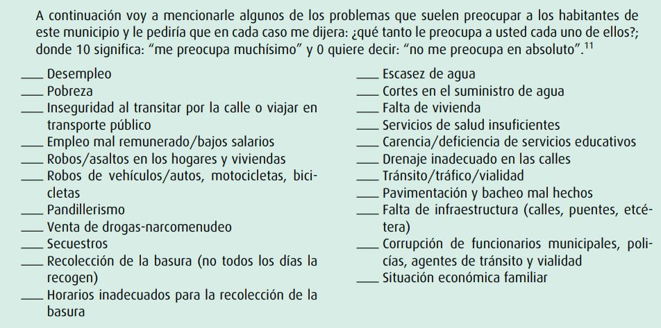
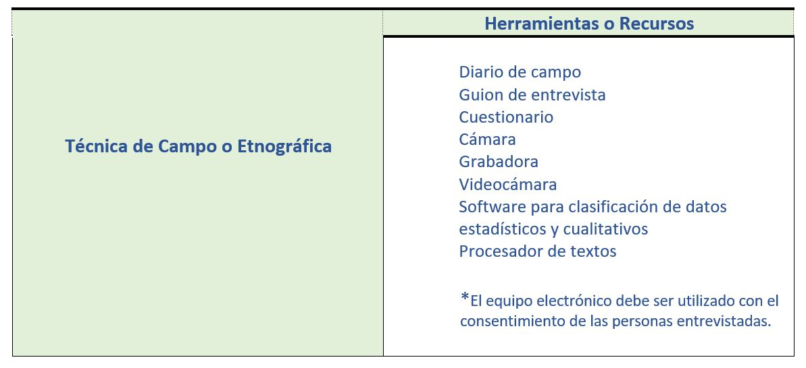

La técnica de campo también conocida como etnográfica o técnica de medición empírica registra y recoge ordenadamente datos relativos al tema objeto de estudio, permite controlar el fenómeno. Esta técnica se caracteriza por el contacto directo del investigador con la realidad social a investigar, se orienta a la búsqueda de la información en el lugar en que se presenta el tema a estudiar (in situ), por lo que es la más indicada para indagar sobre los fenómenos que ocurren tanto en la naturaleza como los procesos de carácter social. Las técnicas específicas de la investigación de campo son la Observación e Interrogación, por lo que cuenta con tres elementos para la recopilación de datos: la observación, la entrevista y la encuesta.
La Técnica Observación
Consiste en el examen analítico de personas, hechos, casos, objetos, acciones, situaciones, fenómenos o sucesos que ocurren a nuestro alrededor. Existen diversas técnicas de observación que permiten el contacto directo con el objeto de estudio, dependiendo del grado del involucramiento, por lo que puede ser observación simple, Auto-observación, Relatos e Historias de vida, Observación sistemática, Observación participante y no participante, Observación estructurada o no estructurada, De campo o de Laboratorio, Individual o de equipo.
La observación participante es ideal para extraer ideas y pistas sobre el problema al involucrarse en el medio natural con los miembros del grupo a investigar. La observación no participante es cuasi participante, se involucra de cierta forma con el grupo a investigar, pero sin participar directamente es sus actividades.
Los instrumentos o herramientas utilizadas para la observación, será algún tipo de cuaderno de experiencias de campo: suele ser un diario o registro cotidiano de cada punto estudiado y categorizado con subtítulos apropiados. Pueden utilizarse videos, cámaras, grabadoras de audio.
.
La Técnica Interrogación
.
Permite conocer más allá de lo que no es posible detectar a través de lo que se observa. Con esta técnica se logra el acopio de testimonios orales o escritos por medio de preguntas de sondeo, entrevista o encuesta sobre percepciones, creencias, sentimientos, motivaciones, ideas, planes, opiniones o posturas de personas vivas.
Las preguntas a considerarse tanto en las entrevistas como en las encuestas independientemente del tipo, deben estar bien pensadas, redactadas de forma clara, precisa y comprensible para el sujeto encuestado. Por lo que deben evitarse términos confusos, ambiguos o de doble sentido. Se recomienda utilizar vocabulario simple, directo y familiar para el participante, evitar hacer preguntas racistas o que los ofendan.
Entrevistas
Para llevar a cabo una Entrevista exploratoria deben tener en cuenta ciertos aspectos claves ¿Con quién resulta provechoso tener una entrevista? ¿En qué consisten las entrevistas y cómo debe proceder? ¿Cómo aprovecharlas para que permitan una verdadera información sin prejuicios, ideas preconcebidas?
- Pueden ser: Entrevistas abiertas a profundidad (no estructuradas), Entrevistas estructuradas, Entrevista semiestructuradas, Grupos de discusión.
Toda entrevista debe planearse con tres fases: inicio, desarrollo y cierre. Y se consideran tres grupos de personas que pueden ser interlocutores válidos para llevarse a cabo: Entrevistas con expertos, Entrevistas de calidad (testigos vinculados ampliamente con el objeto de estudio) y Entrevistas de opinión (público relacionado directamente con el objeto de estudio).
Éstas se deben llevar a cabo en un ambiente y contexto adecuado, con la posibilidad de grabar las entrevistas, siempre y cuando el participante otorgue su consentimiento.
Encuestas
La encuesta se realiza a un grupo representativo de la población objeto de estudio. Pueden tener preguntas directas, abiertas (No delimitan de antemano las alternativas de respuesta, para profundizar en la información y conocer la opinión), cerradas y semicerradas (contienen categorías o alternativas de respuestas delimitadas previamente) o mixtas (abiertas y cerradas).
La determinación del tipo y cantidad de preguntas dependerá de las necesidades según el problema de investigación, las características de la muestra, el tipo de análisis, las variables, etc. Las preguntas cerradas son más fáciles de codificar durante un análisis ya que evita la ambigüedad de las respuestas y requieren de un menor esfuerzo por parte de los encuestados que si se aplicaran preguntas abiertas. Sin embargo, las preguntas cerradas limitan la respuesta de la muestra, puesto que en ocasiones las categorías no describen con exactitud lo que las personas tienen en mente.
Es por ello, que las preguntas abiertas al proporcionar información de manera más amplia, son particularmente útiles cuando no se tiene idea sobre las posibles respuestas de las personas o es insuficiente. Se utilizan también, para ocasiones donde se desea profundizar en alguna opinión o motivos de comportamiento.
Ejemplos de Preguntas Cerradas

Cuando la encuesta es de forma presencial, se deben evitar preguntas que se pueden verificar por medio de la observación.
La ubicación de las preguntas también tiene su estrategia, primero las preguntas referidas a datos generales y directas (las demográficas o de ubicación del participante encuestado), después las referentes al tema en cuestión, y finalmente las de opinión. Se recomienda iniciar con preguntas fáciles de contestar para que el individuo se adentre en la situación. Ir de lo general a lo específico.
Antes de establecer las preguntas debe especificarse información sobre la encuesta: título, logotipos, propósito general del estudio, importancia de su participación, agradecimiento, tiempo aproximado de respuesta, área para firma de consentimiento, instrucciones iniciales y algún otro dato que se crea pertinente.
En las Ciencias Sociales, para las preguntas cerradas se utilizan escalas de opiniones e intereses dirigidas en general para la medición de aspectos relacionados con la intensidad de un sentimiento o actitud de un grupo respecto a un tema en particular. El uso de escalas se asocia con el enfoque cuantitativo dentro de la investigación.
Las actitudes son conductas espontáneas, dinámicas en el sentido de cambiantes en el que predomina el contenido afectivo, en cambio las opiniones son posiciones conscientes, racionales en la que predomina el componente cognoscitivo.
Para medir se han creado diferentes tipos de escalas: escalas de ordenación, de intensidad y de distancia social.

Las escalas de ordenación (también se les denomina arbitrarias o de estimación), es aquella en la cual cada individuo ordena según su preferencia, objetos o individuos en relación con una característica.
Ejemplo de Pregunta con Escala de Ordenación:

.
Por lo cual, para recopilar la información de las diversas técnicas de campo, se utilizan varias herramientas como:

.
Si deseas tener más claras las características para el diseño de encuesta o cuestionario, puedes considerar el siguiente documento de F. Javier Murillo, de la Universidad Autónoma de Madrid (puedes bajarlo a tu equipo):